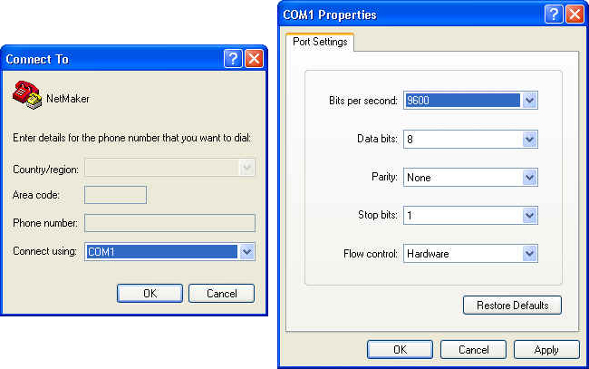
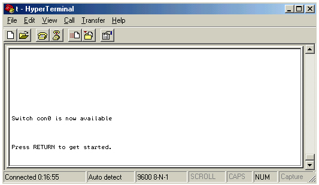
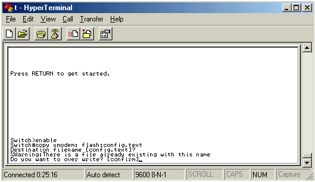
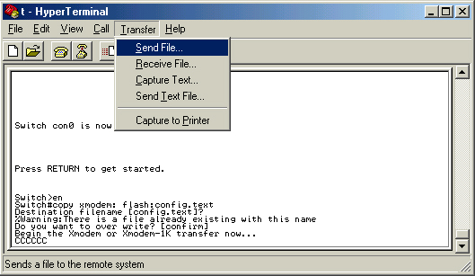
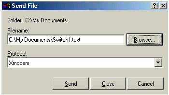
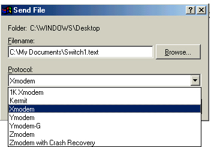
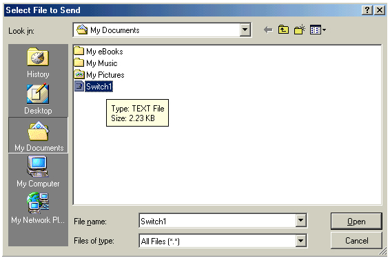
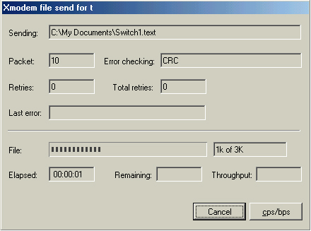
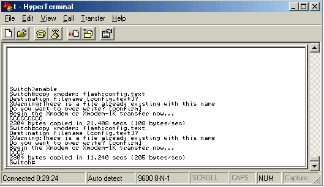
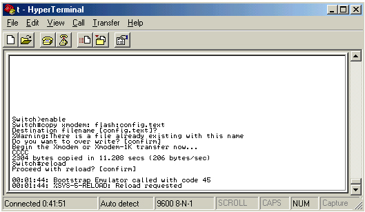

การใช้งานโปรแกรมในการออกแบบเครือข่าย การคอนฟิกสวิตช์ การคอนฟิกเราเตอร์ การสร้างค่าติดตั้งสวิตช์และเราเตอร์ การนำค่าติดตั้งที่ได้ไปใช้งาน
การนำค่าติดตั้งที่ได้ไปใช้งาน
การตั้งค่าการทำงานของสวิตช์โดยการอัพโหลดค่าติดตั้งสามารถทำได้หลายวิธี
เช่น อัพโหลดผ่านเอกซ์โมเดม (XModem),TFTP
เป็นต้น การอัพโหลดจะมีผลให้สวิตช์มีการทำงานตามค่าติดตั้งที่ถูกสร้างขึ้นจากโปรแกรมสร้างค่าติดตั้งอุปกรณ์เครือข่ายนี้
ในที่นี้จะเป็นขั้นตอนการอัพโหลดผ่านโปรแกรมHyper Terminal โดยใช้เอกซ์โมเดม
มีขั้นตอนดังนี้ |
ขั้นที่ 1
|
ต่อสายซีเรี่ยลคอนโซลเข้ากับสวิตช์ที่ต้องการตั้งค่าและคอมพิวเตอร์ที่ต้องการส่งไฟล์ค่าติดตั้งไปยังสวิตช์ เปิดโปรแกรม Hyper Terminal ตั้งค่าการเชื่อมต่อเป็น COM1 หรือ COM2 ตามการต่อสายซีเรี่ยลคอนโซลที่ต่อกับเครื่องคอมพิวเตอร์ และตั้งค่า Bit Per Second เป็น 9600 ดังรูปที่ 45 |

รูปที่ 45 แสดงการตั้งค่าเพื่อใช้งานโปรแกรม Hyper Terminal

รูปที่ 46 แสดงหน้าต่างสำหรับพิมพ์คำสั่งในการตั้งค่าสวิตช์
ขั้นที่ 2 |
กดปุ่ม Enter เพื่อเข้าใช้งานตั้งค่าสวิตช์ หรือเราเตอร์ เข้าสู่โหมด Privilege พิมพ์คำสั่งเพื่อคัดลอกค่าติดตั้งอุปกรณ์เครือข่ายไปยังสวิตช์หรือเราเตอร์ตามคำสั่งดังรูปที่ 47 |

รูปที่ 47 แสดงคำสั่งที่ใช้ในการอัพโหลดไฟล์ติดตั้งค่าอุปกรณ์เครือข่าย
ขั้นที่ 3 |
เลือกเมนู Transfer จากหน้าต่างโปรแกรม Hyper Terminal แล้วเลือก Send File.. ดังรูปที่ 48 |

รูปที่ 48 แสดงขั้นตอนในการส่งไฟล์ผ่านเอกซ์โมเดม
เมื่อเลือก Send File... จะได้ผลดังรูปที่ 49 |

รูปที่ 49 แสดงหน้าต่างที่ได้จากการใช้เมนู Transfer ในการส่งไฟล์
ขั้นที่ 4 |
เลือกปุ่ม Browse.. เพื่อเลือกไฟล์ค่าติดตั้งอุปกรณ์เครือข่าย และเลือกโพรโตคอลเป็น Xmodem และเลือกปุ่ม Send ดังรูปที่ 50 - 51 |

รูปที่ 50 แสดงขั้นตอนโพรโตคอลเพื่อใช้ในการส่งไฟล์

รูปที่ 51 แสดงขั้นตอนการเลือกไฟล์
ผลที่ได้จากการกดปุ่ม Send เพื่อส่งอัพโหลดไฟล์ค่าติดตั้งอุปกรณ์เครือข่าย ดังรูปที่ 52 - 53 |

รูปที่ 52 แสดงการอัพโหลดไฟล์ค่าติดตั้งอุปกรณ์เครือข่าย

รูปที่ 53 แสดงผลที่ได้จากการส่งไฟล์ผ่านโปรแกรม Hyper Terminal
ขั้นที่ 5 |
พิมพ์คำสั่ง reload เพื่อให้สวิตช์หรือเราเตอร์มีการทำงานตามค่าติดตั้งสร้างขึ้นใหม่ ดังรูปที่ 54 |

รูปที่ 54 แสดงคำสั่งในการ Reload สวิตช์ หรือเราเตอร์